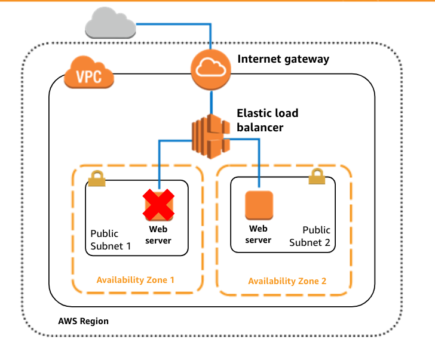
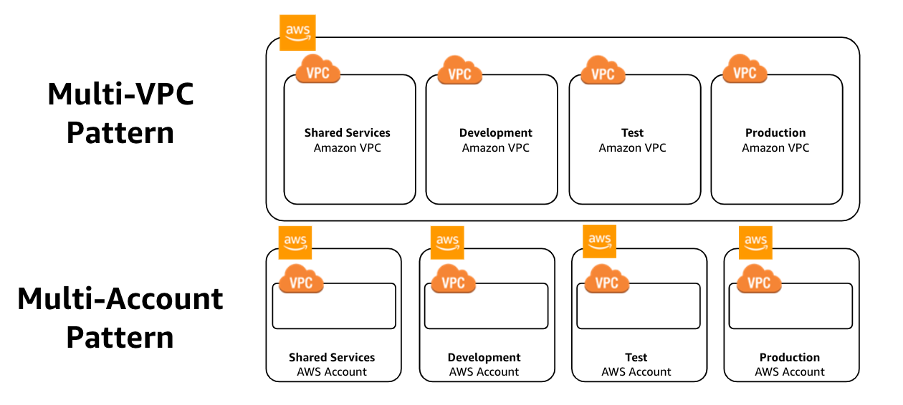
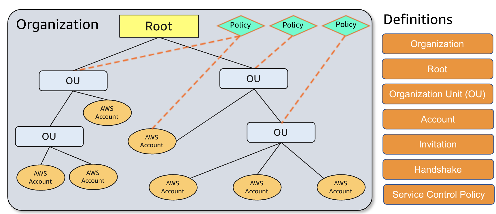
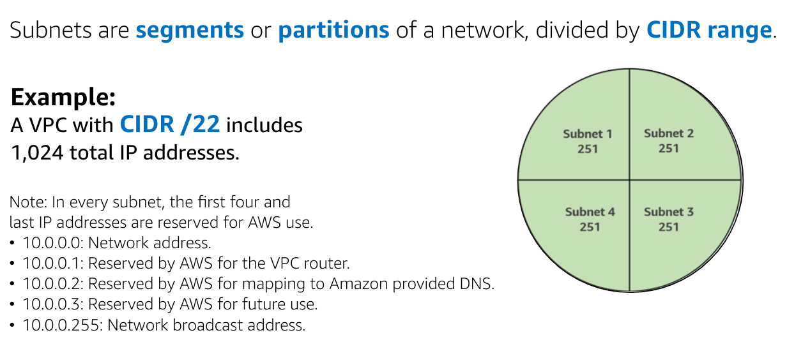
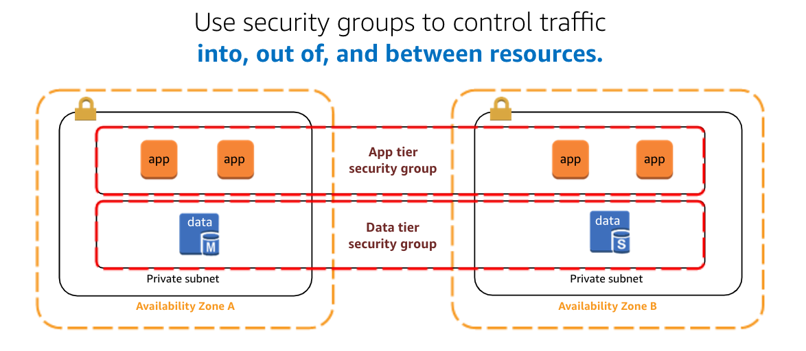
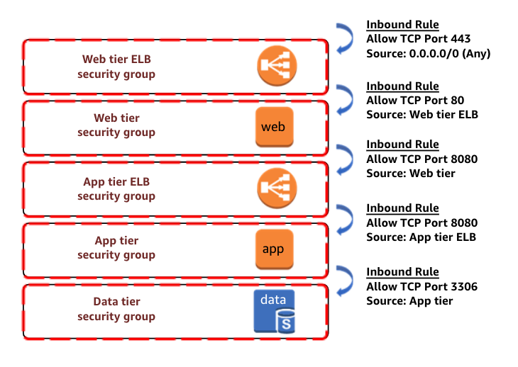
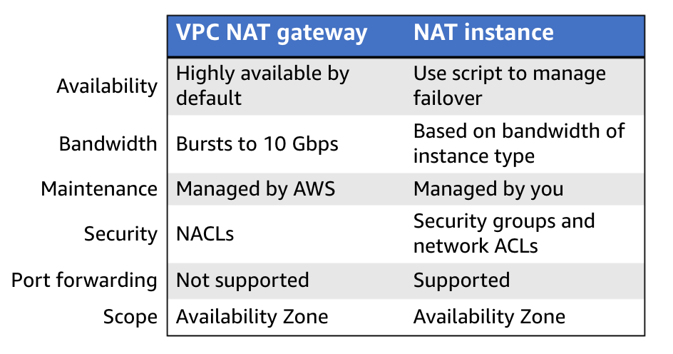
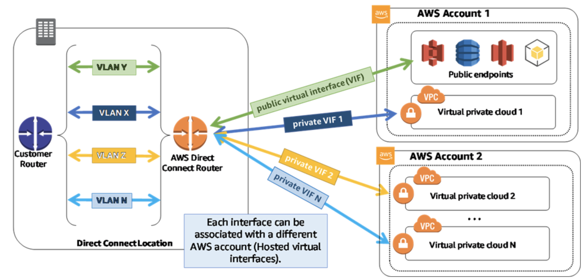
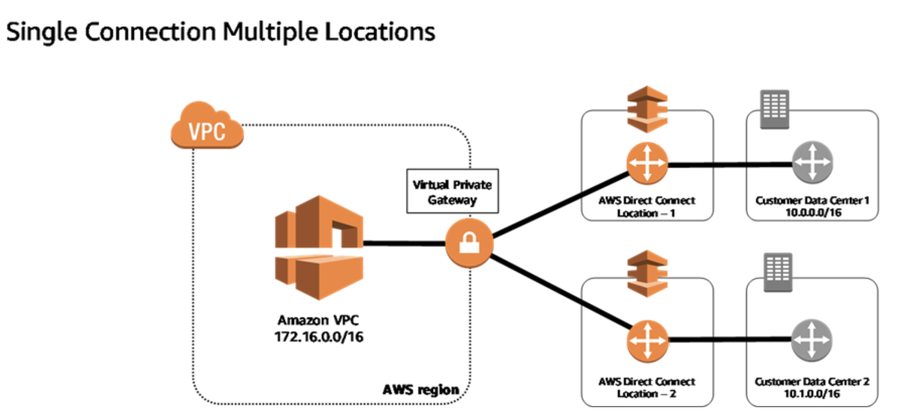
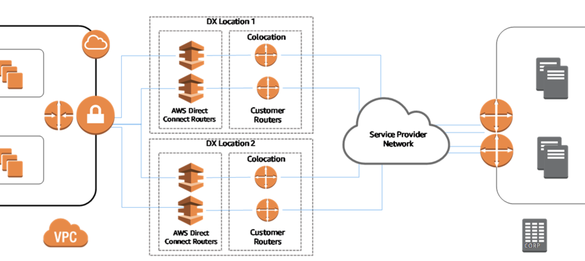

欢迎来到我的AWS学习笔记系列。
本文着重记述关于如何创建一个AWS环境，创建环境时的注意事项。如若转载，请先与作者联系。
本文图片来自于网络
How to design an environment
I. How to choose a region
Data sovereignty and compliance.
Proximity of users to data.
- Some regions are more expensive than the others.
- 100ms delays can cost 1% dropping sales on Amazon.com.
Availability of services and features
- Some services are available in limited regions.
- Some can cross regions, but at increased latency.
Cost-effectiveness
- Services costs vary by Region.
- Some have costs for transferring data out.
- Best at least two regions.
- Replicating entire environment to another region.
II. How many availability zones to use?
Start with 2 az per region.

For the following scenarios:
- heavily use Amazon EC2 Spot Instances -> 2 az
- applications with MySQL, SQL server, Oracle data sources -> 2 az to support active/passive
- applications with data sources Cassandra/MongoDB -> 2 or more az for extremely high availability
III. VPC
Using one VPC
- High-performance computing environment
- Microsoft active directory for identity management.
- Small, single applications managed by very small team.
Most cases, there are two primary patterns for organizing the infrastructure:
Multi-VPC or Multi-Account.

Multi-VPC pattern:
- For single team or organization
- Limited teams make maintaining standards and managing access easier.
Multi-Account pattern
- Larger organizations
- Organizations with multiple IT teams
- Medium-sized organizations that grow fast.
AWS Organizations
- Hierarchical grouping of accounts
- Integration and support of IAM
- Integration of other AWS services
- Data replication with eventually consistency
- Caching may improve performance.

IV. Divide the VPC to subnets
Classless Inter-Domain Routing(CIDR).
Amazon VPC can use CIDR ranges between /16 to /28.
/16: 256 * 256 = 65536
/28: 2^4 = 16

For each subnets, there are five ip address unavailable because they are reserved.
Private subnet: Include a routing table entry to an internet gateway to support inbound/outbound traffic.
Public subnet: Don’t have such routing table so cannot be accessed to the internet gateway. But can use a “jump box” – which is a (NAT/proxy/bastion host) to support restricted, outbound-only public network access.
Note: The majority of the network resources should be hosted into private subnet.
Recommendation:
- subnet size. Consider larger subnets over smaller ones(/24, and larget)
- subnet type
- Data store instances: private
- Batch processing instances: private
- Backend instances: private
- Web application instances: public or private
V. Default VPCs and Default Subnets
Default VPC
- Each region in the account has one default VPC.
- Default CIDR for the default VPC: 172.32.0.0/16
- include a default subnet, gateway, main route table, security group and Network ACL.
Default subnet in default VPCs
- Created within each AZ for each VPC.
- public, with CIDR block of /20
- Whenever add a AZ, place a subnet in it.
Recommendations:
- Use default VPCs and subnets to experiment with the AWS account only.
- For real-world applications, create your own VPCs and subnets.
VI. Controlling VPC Traffic
Route tables:
- Main(default) and custom route tables
- All route tables include a local route entry
- 10.0.0.0/16 -> local
- The local entry cannot be deleted
- Only one route table per subnet
- Best practice: Use custom route tables for each subnet.
Security groups:
- Stateful applications that act as virtual firewalls
- By default
- Deny all inbound traffic
- Allow all outbound traffic
- Use allow rules to filter based on protocols
- If inbound is allowed, then the outbound response is allowed automatically.

Unless required for the compliance, it is not recommended to modify the default security group.
Create security groups with inbound rules for each funtional tier(web/app/data) within an applications.

Network ACLs
- Virtual firewall
- When creating new one, automatically configured to DENY All traffic.
Internet Gateways
- Horizontally scaled, redundant, and highly available.
- To enable access to or from the Internet:
- Attach the gateway to the VPC
- Ensure subnets’ route table points to the gateway
- Ensure the instances have public IP address/Elastic IP address
- Ensure the NACLs and security groups allow the relevant traffic
Outbound from private instances
- Enable NAT
- Two options:
- Amazon EC2 instance set up as a NAT in a public subnet
- NAT Gateway.
- Both these two are in the public subnet.

Amazon VPC Flow logs
- Capture traffic flow details in your VPC
- Can be enabled for VPCs, subnets, and ENIs
- Publish logs to CloudWatch Logs.
VII. Connect multiple VPCs
VPN Hub and Spoke Architecture
- Two Amazon EC2-based VPN endpoints in each spoke to support high availability
- Central VPC(hub) that contains common services for all application VPCs
- Dynamic routing protocol between the spokes and the hub
Resolution: VPC Peering
To establish a VPC peering connection:
- One sends a request, another one accepts to activate.
- To enable, add a route pointing to IP address range of peer VPC
- Update security groups
- VPC peering connection is one-to-one relationship between two VPCs
- Note: Now VPC peering can cross different regions, through AWS backbone, never travel through the public Internet.
- VPC peering is not transitive.
VIII. Integrating On-Premises Components
VPN-connections
- Amazon Virtual Gateway(VGW).
- Dynamic routing uses Border Gateway Protocols, or BGP, peering to exchange routing information.
- AWS managed VPN supports up to 1.25 Gbps throughout per VPN tunnel.
AWS Direct Connect
- Dedicated, private fiber to AWS.
- Create virtual interfaces(VIF) directly to AWS cloud.
High Resiliency for Critical Workloads

Maximum Resiliency for Critical Workloads

Dual DX-Dual Location

VIV. VPC Best practices
Best practice:
- Choose CIDR block or IP address ranges wisely. Plan ahead.
- Use subnets to divide resources based on access.
- Use Multi-AZ deployments in VPC for high availability.
- Use security groups to control traffic between resources.
- Use VPC FLow Logs to track and monitor the VPC traffic.
- Check the health of the VPN link via API calls or AWS Management Console.
Common practice:
- Replicate the architecture across two/more AZ.
- Use NAT gateway to be in place of NAR instances. But which is on earth more appropriate? Check the previous content.
- If resources in multiple AZs share one NAT gateway, that is not recommended because if that gateway’s AZ is down, all resources in other AZ will be down. So in order to create AZ-independent architecture, be mind to create one gateway to each AZ.